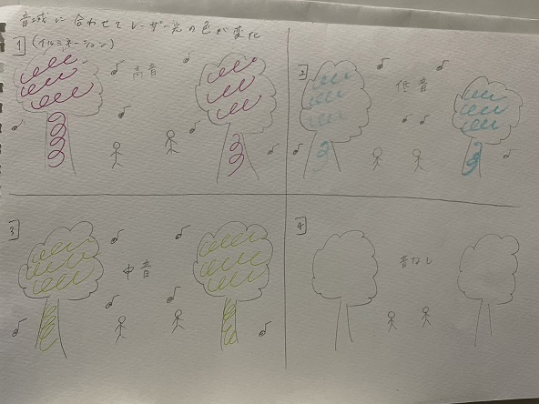
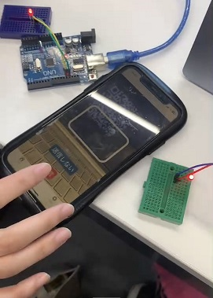
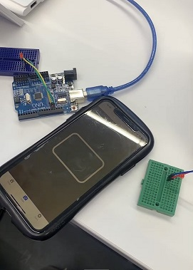

第2回 IOT→遠隔で操作、管理させることで、どのような新しいサービスが考えられるか？
ポストイット

自分で考えたアイディア
曲の音域に合わせて光が連動して色が変わる
イルミネーションなどで使えたら綺麗になりそうだなと思った
例)高音→赤色、低音→青色など

遠隔スイッチ(IoTサーバー→Python→Arduino)
IoTサーバーの最新の値を読んで、条件に合えばLEDを光らせる
QRコードを利用して携帯アプリから光らせる
 
QRコードを読み取ってる写真(LEDついてる)→実行した写真（LEDついていない）